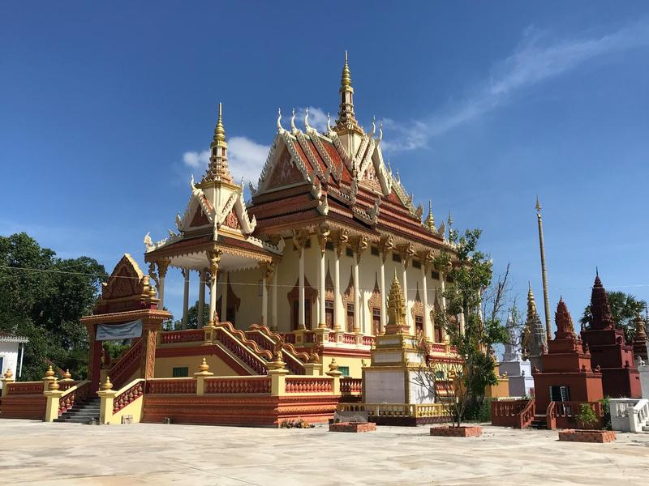
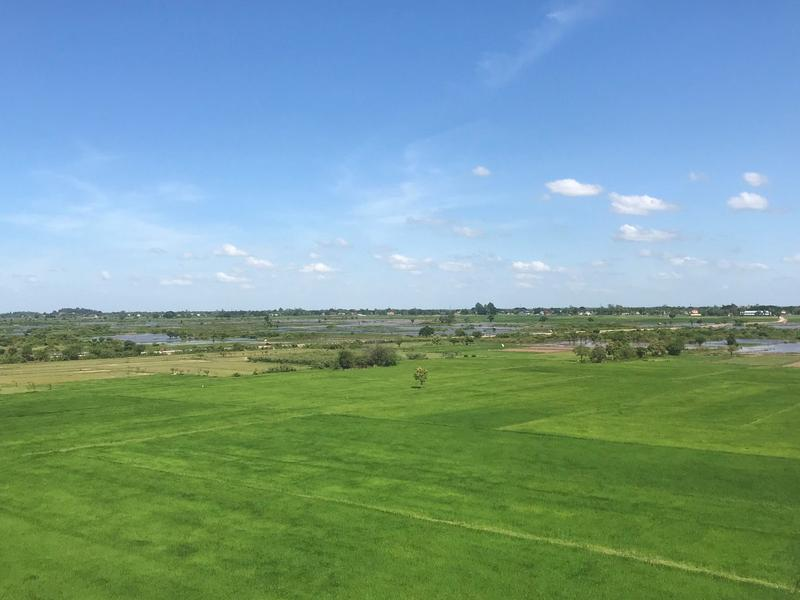
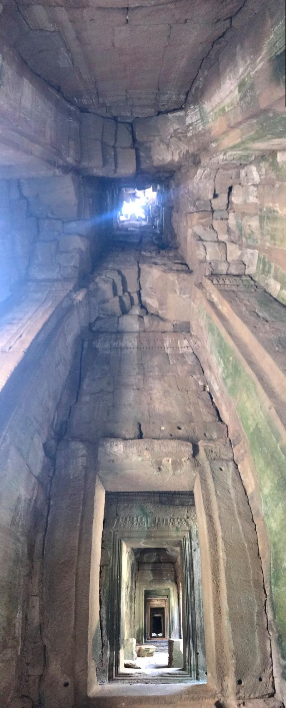

Cesta do Angor Watu zima 2019
Jak jsem se vydal na kole ze Saigonu ve Vietnamu až do slavného Angor Watu.
Angkor Wat. Největší náboženský komplex na světě, který údajně stavělo na 300 tis. lidí. Je to jedna z nejnavštěvovanějších památek na světě a dnes už mohu říct, že zcela právem. Můj cíl byl chrám Bayon, který je vedle Angkor Watu a který je známý smějícími se tvářemi vytesanými ve zdech.
Nejprve ale hezky na začátek celého příběhu, do vietnamského Ho Či Minova města. Celou dobu jsem bydlel mimo centrum u Giang.
A musím říct, že se mi tady líbilo. Plánování je moje silná stránka, a tak jsem Airbnb rezervaci upravoval jen 12x.
Díky tomu jsme měli mnoho času. Přestože mě Giang několikrát provedla místními trhy, léky proti bolestem břicha mi sháněla pouze jednou. A ty procházky stály za to. Zde jsme třeba objevili jídlo, které je balené do stránek z fyziky. Prostě škola hrou. Eh, škola jídlem, chtěl jsem říct.
Po pár dnech bylo na čase rozloučit se. Pořídil jsem si kolo a vyrazil s ním na jih Vietnamu. Strávil jsem v deltě Mekongu na různých místech více než týden.
Den před závěrečnou cestou na hranice s Kambodžou se však objevila černá obrazovka a můj MacBook přestal fungovat. To je pro mě poměrně velký problém, protože při cestě pracuji. Zavezl jsem ho do nejbližšího Apple servisu, kde se mu věnovali vietnamští odborníci. Pak už přestal fungovat úplně. Prý ho musí poslat do Singapuru, protože si neví rady, ale do 3 týdnů to bude snad opraveno. To nešlo akceptovat, musel jsem vyřešit opravu jinak a tak jsem cestu předčasně ukončil.
A tak trvalo celý rok, než jsem vrátil zase na začátek. Druhý pokus, teď už je to výzva!
Když jsem vyrazil před 5 roky na svou první cestu, moje výbava měla téměř 30 kg. Dnes, po 2 a půl letech na cestě, má můj batůžek 7 kg a další necelé kilo nástrojů na opravu kola. Stačí jeden stojan, 3 gumicuky a dva páry čínských hůlek na vyvážení stability a můžu vyrazit!
První den jsem dojel do Cu Chi, kde si člověk může prohlédnout tunely, které používali Vietnamci za války a které jim výrazně pomohly vyhrát válku s Američany. Na prohlídku jsem se přidal ke skupině malajských turistek. Protože jsem přišel později a jako jediný jsem neměl šátek, musel jsem lézt do všech děr jako první. Nejčastější otázka, kterou jsem ten den slyšel byla: “Kdo si to vyzkouší? Co třeba tady Čech?”
Náš průvodce byl velmi divný člověk. S velkou radostí si vychutnával popis všech pastí, které Vietnamci na Američany vyrobili. Tady nám popisoval, co se stalo, když Američan vstoupil do dveří a proti němu se spustilo tohle. Čekal zásah na hrudník, ale Vietnamci ho překvapili a přidali i zásah mezi nohy.
Pak jsme došli k velkému dělu, průvodce se o něj opřel a řekl, že kdo by chtěl, může si zastřílet z vietnamských zbraní. Já, unaven z předchozí cesty, jsem to pochopil tak, že pokud chci, mohu si zastřílet z děla. To mi přišlo super! Kdo kdy střílel z děla?! A hned jsem přemýšlel, jak to mají vyřešené, že to nikoho nezabije?
Průvodce se na mě otočil a zeptal se, zda do toho půjdu. “Jako z toho děla?”, ujišťuji se. To vyvolalo bouřlivý smích malajských turistek i vietnamského průvodce.
Pak se ukázalo, že jde jen o AK-47, asi nejznámější zbraň všech dob, kterou si tady člověk může vyzkoušet. To mě zaujalo, protože když mi bylo 15 let, s touto zbraní jsem osvobodil nemalý počet vesniček a trochu si myslím, že bych za to měl dostat státní vyznamenání. Pravda, bylo to jen v počítačových hrách, ale to jsou takové nepodstatné detaily.
Takže jsem si deseti ranami vyzkoušel, jak se tehdy útočilo na imperialisty ze západu.
Suvenýry z Cu Chi.
V Cu Chi jsem bydlel u jednoho milého Němce, který si vzal vietnamskou manželku.
Tuto fotografii bych nazval: “Jakube, já se fotit nebudu, ale vyfotím tebe. Běž se tam postavit. Tááák. Pozor! Fotím! Ale furt tam vidím sebe. Není to nějaké rozbité? Vůbec nevím, jak to funguje, ale snad je to dobře.”
Další den byl můj cíl město Tây Ninh, které leží nejsvětější chrám kaodaismu.
Bohoslužby uvnitř chrámu.
Tohle místo bylo ale plné turistů a mně se mnohem více líbily kaodaistické chrámy, které jsem potkal náhodou po cestě.
Propagandistické billboardy jsou všude. Tady mě zaujalo, jak jsou udělány moderně s notebookem.
V Tây Ninh jsem si udělal pracovní pauzu. Tohle místo bylo úžasné, jedna stěna je celá prosklená. Když to jde, tak se snažím na podobných místech přespat, ideálně v co nejvyšším patře. Výhled na Hong Kong to není, ale i tak dobrý.

Tyhle hodiny musí být ve všech vietnamských hotelech, jinak to nevypadá dostatečně mezinárodně. Musí tam být New York a Londýn, často je tam i Tokio a Peking. Většinou ty hodiny nefungují, ale tohle byl úplně nový hotel, tady se baterky ještě nevybily.
Vietnamské krajinky po cestě na hranice.
Přechod hranic s Kambodžou. Pro mě je to už 40. navštívená země za poslední 4 roky.
Hned za hranicemi je vidět propastný rozdíl mezi Vietnamem a Kambodžou, je to jako vrátit se tak o 20 let zpět.
Všude jsou kasina a všechno je v čínštině. Kolem sebe slyším jen čínštinu a vidím jen Číňany. O Kambodži se říká, že je to čínská provincie a první dojem je přesně takový. Jsem v nějaké velmi chudé části Číny.
Cesta od hranic do vnitrozemí po hlavní silnici Route Nationale 1. To je asi nějaké prokletí, jakmile silnice dostane číslo 1, tak je rozbitá všude.
Mé první ráno v nové zemi. Je krátce po 6 a všude vidím jezdit děti v uniformách do školy. Procházím se až dojdu k jedné ze základních škol. Zde jsou děti, které uklízejí okolí školy. V celém okolí je jich hrozně moc a všichni pečlivě drhnou okolí, aby bylo co nejčistší. Kambodža je velmi špinavá, všude je prach a odpadky, ale kolem škol je čistěji než v Japonsku.

Hledám něco k snědku a procházím kolem pouličního stánku, když ke mně přijde khmerská žena a anglicky mi rozkáže: “Sit down!” A o minutu později mi už dává snídani. Za 15 Kč se dobře najím.
Čtvrtý den cesty mám v plánu 100 km do hlavního města Phnom Penh. Cestou vidím všude rozpadlé domky a vedle toho ohromující buddhistické chrámy.

Chrámy v okolí. Jsou snad v každé vesnici a vždy to jsou monumentální stavby.
Vstupy do chrámů. Každý je úplně jiný.
Takhle vypadá velká část Kambodži. Zelená placka.

Cesta do Phnom Penh byla trochu jednotvárná a tak jsem otevřel Google, ať mi najde něco zajímavého. A jediná zajímavost široko daleko byl tenhle most, tak jsem vám ho vyfotil. To jsem ještě nevěděl, že most je v Kambodži vlastně vzácnost.
Co mě však na Kambodže šokovalo bylo ohromné množství mávajících dětí. Ohromné! I v mnoha jiných zemích volají děti na cizince “Hello! Hello!”, ale tady to bylo pořád. Nonstop. Celý den. Připomnělo mi to maraton v Praze, kdy člověk běží a neustále ho lidi povzbuzují. Člověk se někde zastaví a hned slyší ze všech stran volání. A co teprve když jsem se zastavil u nějakého obchodu na doplnění zásob, to vyvolalo úplnou euforii a děti z dálky se sbíhají a začínají zkoumat, co jsem zač. Funguje to všude s výjimkou turistických míst.
Tohle je foto z videa, kdy jsem si natáčel průjezd kolem skupinky dětí a počítal jsem, kolik z nich mi začne mávat a zdravit mě. Podle předpokladů to byli všichni: https://www.youtube.com/watch?v=NitG4Fpuw-Q
K večeru přijíždím konečně do Phnom Penh a první, co mě napadlo je, že jsem v Ulaanbaataru. Přesně takhle to tam vypadá. Všude je hrozný prach, že nejde vidět do dálky, ani dýchat a všude jsou ohromné zácpy. Trvá mi skoro hodinu a půl dostat se pár kilometrů do centra města poblíž ulice Mao Ce-tunga, kde budu bydlet.
Tohle je výhled z mého pokoje na město.
Ráno vyrážím do bývalé věznice Tuol Sleng, dnes muzeum genocidy. Všichni asi už slyšeli o tom, že v Kambodži kdysi vládli Rudí Khmérové. Byl to ten nejbrutálnější režim, jaký kdy člověk dokázal vytvořit. Během jejich krátké vlády zahynulo 1,7 až 3 mil. lidí, přibližně ¼ až ⅓ všech obyvatel Kambodže.
Celkem zde věznili 16 000 lidí a pouze 12 vězení přežilo. Vězni byli nejprve brutálně mučeni dokud se nepřiznali, že spolupracovali se západními tajnými službami. Pak byli hned popraveni, oni i celá jejich rodina. Tohle je plot, který musel byt zbudován, protože kdykoliv měli vězni možnost, pokusili se hned spáchat sebevraždu.
Celé muzem je špičkově zorganizované. Každý dostane audio přehrávač a podle bodů na mapě si pouští příběhy a vyprávění, co se na daném místě dělo. Všude je úplný klid, ticho.

Královský palác v Phnom Penh. Kambodžský král studoval v Praze a mluví plynně česky.
Tady jsem nedával moc pozor. Že by 7 žen pro krále, na každý den v týdnu jedna?
Další drobnost, která potěšila. Venku je 35 stupňů a někoho napadlo, že by bylo fajn dávat turistům vodu zdarma a neprodávat ji za přemrštěnou cenu. V Kambodži jsem tohle nečekal.
Nádherná budova národního muzea.
Centrální trhy v Phnom Penh. Co se tady vyrobí, to se tady i prodá.
Poslední místo, které jsem v Phnom Penh navštívil, bylo asi to nejsilnější, které jsem kdy viděl. Killing fields, neboli vražedná pole. Zde se sváželi lidé a ihned se hromadně popravovali, avšak způsobem, který je prostě mimo chápání.
Celé místo je uděláno stejně jako muzeum genocidy. Člověk dostane audio přehrávač a prochází místa a poslouchá.
No a pak přijde sem, na bod číslo 15. Z přehrávače se ozve upozornění, že jsme se dostali na místo, které bude opravdu těžké. Tohle je killing tree a co se dělo tady, to sem psát nebudu. Souvisí to s dětmi. Tohle posunulo hranice toho, o čem jsem si myslel, že je člověk schopen. Cesta sem vedla na 150 km a po celou cestu člověk slyší neustálé dětské volání “Hello” a pak dorazí sem?
Pojďme dál.
Cesta zpět z vražedných polí do Phnom Penh tuktukem. Poprvé jsem zažil, že by mi taxikář nenapálil cenu na maximum, ale naopak se mě zeptal, kolik chci zaplatit. Zmaten, že mě nikdo nechce okrást, jsem řekl ještě menší částku, než bych platil s Grabem s tím, že budeme vyjednávat. Ale taxikář jen smutně souhlasil. Nevěděl jsem, co dělat. Teď jsem v roli okrádajícího já! Nová doba, cestující okrádá taxikáře v jihovýchodní Asie! Nakonec jsem mu dal stejnou částku jako s Grabem, ale příště raději zase s aplikací. Tihle poctiví Kambodžani mě úplně matou!
Po třech dnech v Phnom Penh vyrážím dále. Dalších 100 km, tentokrát vesnickou krajinou. Co je zajímavého na téhle fotce? Vlevo nahoře je drak. V každé vesnici jsem viděl děti pouštět drahy. Nikdy v životě jsem neviděl tolik lidí pouštět draka! Kdo by tohle čekal v Kambodži?
Typické kambodžské domy. Jsou velmi pestrobarevné. Nikde jsem třeba neviděl tolik fialových domů jako tady. A stojí vysoko nad zemí.
Další kambodžské domy, tentokrát uprostřed palem. Přesně takhle jsem si Kambodžu představoval. Naopak jsem netušil, jak neuvěřitelné milí a hodní Kambodžané jsou. V průměru každých 15-20 km jsem se někde zastavoval pro vodu. Nikdy se nestalo, že by někdo dal vyšší cenu. Všude jsem platil stejně a vždy jsem dostal do posledního haléře správně vráceno. Bylo to jak v Japonsku. Po celých 500 km. Donesli mi vždy židli, nechali mě posadit, pustili na mě větrák a dělali vše proto, abych si mohl odpočinout. Kambodža je první země, kde mě prostě bavilo utrácet peníze. Rád jsem si něco od těch lidí kupoval.

Krajinky podél cesty.
Bavilo mě strašně pozorovat lidi. Kupuji si zrovna vodu a vidím, jak k nám jde malé dítě ve školní uniformě. Najednou mě zpozoruje, rozzáří se a zamává mi. Poté se podíva na matku vedle a zvážní. Pomalým krokem k ní přichází a vytahuje něco z brašny. Matka si bere nějaký sešit a prohlíží si ho. Dítě se sklopenou hlavou čeká na ortel. Pak proběhne tichá konverzace, matka se na něco ptá, dítě pokaždé tiše odpoví. Vypadá to jako kontrola výsledků z testů. Pak vloží sešit zpět do brašny, dítě se podívá na mě, zamává a vchází do domu.
Pomalu dojíždím do cíle dnešního dne. Už jsem hodně unavený, celý den byl protivítr a chybí mi už jen pár kilometrů. Jenže najednou cesta končí. Je tady řeka Mekong. KDE JE MOST? No, nikde. V Kambodži je jich jen pár, nejbližší je snad 60 km daleko.
Podle mapy by tady měl být alespoň trajekt. Jenže nevím, kdy a zda vůbec pojede. Nejsou tady žádní lidé a jen v dálce je vidět nějaká loď, ale moc to nevypadá, že by měla připlout. Naopak to vypadá, že jsem přijel pozdě a dnes už trajekt nejezdí. Nemám už žádné jídlo ani pití a hlavně mi docházejí peníze, nejbližší bankomat je právě za řekou.
Už se pomalu chystám, že přespím tady na pobřeži, když se ke mně blíží motorkář. Pomocí Google překladače se ho ptám, zda se dnes dostanu na druhý břeh. Prý ano, ale musíme počkat, až se trajekt na druhé straně naplní a pak připluje a nikdo neví, kdy to bude. Nakonec to trvalo skoro hodinu a půl, než přijel a dovezl nás na druhou stranu.
Poslední kilometry už musím absolvovat za úplné tmy. Nemám světlo a venku také nic nesvítí. Naopak míjím několik škol, kde se studuje ještě po 8. večer. Také vidím spoustu svateb. V Kambodži se buď studuje, nebo vdává/žení.
Pozdě večer konečně dorážím k svému hotelu a recepční mě potěší zprávou, že nemají místo a mojí rezervaci přes booking.com zapomněli zpracovat. Hodná recepční se ale nevzdává a začíná obvolávat okolní hotely, jestli se někde pro mě něco nenajde. Jedno místo objeví a hned mě tam odvážejí.
Hotel vypadá dost hrozně, nefunguje sprcha, elektřina vypadává, ale mě už je to jedno. Hodím věci na postel a jdu sežrat nejbližší prase. Když se vrátím zpět, nemůžu se dostat do pokoje. Zámek se nějak zablokoval. Přichází personál a snaží se závadu vyřešit. Nakonec se nám podaří vyrazit dveře dovnitř a já v pokoji s polorozbitými dveřmi mohu přečkat noc. Byl to fakt těžký den.
Další den jsem byl hodně unavený, a tak jsem se rozhodl popojet méně než byl plán, jen nějakých 60 km a odpočinout si v khmérské vilce. Když jsem přijel, přivítal mě majitel slovy, že je hrozně rád, že jsem z Česka, že hosty odtud mají vůbec nejraději.
Prý když přijede někdo odjinud a v nedaleké vesnici je hlučná svatba, hosté si hned stěžují a píší negativní reference. Naopak Češi se chtějí na svadbu podívat a berou to jako velký zážitek a bonus navíc.
Nádherná khmérská žena, která se o mě starala.
Je 6 ráno, poslední den cesty. Protože jsem včera jel výrazně méně, čeká mě úmorných 175 km ve vedru až do Siem Reap. Znamená to minimálně 12 hodin jízdy.
Kostely podél cesty. Kromě buddhismu je v Kambodži i křesťanství a islám.

Tenhle den byl hrozně náročný. Od rána mi není dobře, už se cítím hrozně unavený a jediné, co mě udržuje při životě, jsou kávy a energy drinky každých 10 až 15 kilometrů. Snažím se na chvíli zapomenout, že vůbec jedu, až se přede mnou objeví značka, že je Siem Reap je až 100 km, musím se zastavit. Kolem nejsou žádná místa na přespání, je to úsek, kde 150 kilometrů není ani jeden hotel a já to prostě musím ten den dojet.
Co mi pomohlo? To gigantické množství dětí, kteří na mě pořád volají “Hello!” Posouvá mě to dál a dál až na hranici 40 km do Siem Reap, kdy se začne stmívat. Pak si dělám pauzy každé 2 kilometry až na značku 15 kilometrů do cíle, kdy už se objeví veřejné osvětlení a já nemusím jet v úplné tmě. Pak už pomalu dojíždím do místa mého ubytování. Jen ukážu beze slova pas a ihned zamířím do postele.
Ráno se probudím ve 4 a téměř se nemohu pohnout, bolí mě úplně celé tělo a je mi blbě. Ale zároveň mě zalije pocit ohromné euforie. Ty vole, já jsem to dojel!
Jsem tady a teď mě omluvte, jdu si dobýt Angkor Wat!
Chybí mi už jen 7 kilometrů. Kupuji si vstupenku a pak pomalu vcházím do areálu. A je to prostě monstrozně ohromně super krásné! :-D Je to mnohem lepší, než jsem si vůbec dokázal představit. Je to prostě nádhera, tohle je místo, které stojí za to. Tečka!

Můj původní cíl bylo stihnout východ slunce, což se mi nepodařilo, ale i tak to stálo za to.
Procházím si první chrám, ale rychle se vrací únava a hrozně mě pálí oči. Potřebuji se na chvíli někde posadit a zavřít oči. Hned usínám a probouzím se až po 3,5 hodinách, kdy se blíží čas poledne.
Můj cíl byl však až Bayon, který je odtud ještě pár kilometrů. A tak pokračuji dále kolem chrámů, které už splynuly s přírodou.
Chrámy v okolí Angkor Watu.
Chrámy v okolí Angkor Watu.
Brána ke vstupu do areálu chrámu Bayon.

A jsem zde. Je 878. den na cestě kolem světa a já jsem konečně na místě, které mě stálo tolik energie. Po dvou týdnech a pouhých 7 cyklistických dní jsem o více než 7 kg lehčí. Každý cyklistický den mi vzal 1 kg, je to 3x víc než při ostatních tour.
Chvíli jsem si fotil velké tváře na zdech, když ke mně přišel tenhle kluk a řekl, že to fotím špatně a když půjdu támhle, bude to fotit z jiného úhlu a bude to vypadat mnohem lépe.
Začal mě provázet chrámem a ukazovat mi různá místa a způsoby, jak tady fotit.
Až jsme došli k téhle chodbičce plné mnichů.
Do místa, kde stála socha Buddhy, kterou však Rudí Khmérové zničili.

Dvě tváře na jedné fotce. Postupně jsme prošli celý chrám.
A pak jsme došli do jednoho zajímavého místa, kde byla socha Buddhy a kam člověk musel trochu popolézt. Já to chvíli zvažoval, zda tam jít, přeci jen už jsem byl unavený a chtěl jsem už jít zpět, ale nakonec jsem souhlasil. Prošli jsme krátkou chodbou a najednou jsem se ocitl v malé místnosti, kde byla socha Buddhy a několik dětských meditujících mnichů, kterých jsem si předtím nevšiml.
Všude byl klid, ticho. A to bylo těch pár vteřin, pro které jsem celou tuhle cestu několik let chtěl absolvovat.
Celé se to najednou propojilo. Jsem v okolí Angkor Watu, největším náboženském komplexu na světě, uprostřed Bayonu, nejznámějšího chrámu zde. Chrám je významný tím, že jsou na něm tváře s úsměvy, které mě vlastně celých 500 km přes Kambodžu neustále provázely. Symbolem cesty se staly děti, to “Hello!” mi zní v uších ještě teď a kdybych nejel na kole, nikdy bych to takhle nevnímal. Návštěva míst spojených s genocidou na mě hodně zapůsobila, obzvláště to, jakým způsobem zacházelo právě s dětmi. A teď jsem v chrámu, kde nemeditují dospělí mniši, ale právě děti.